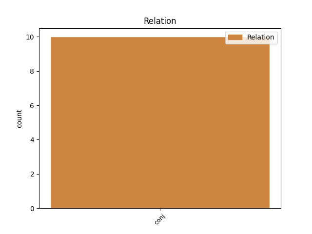
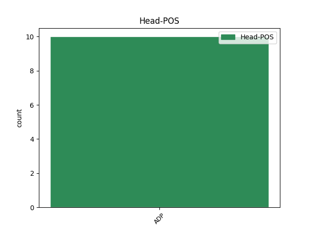
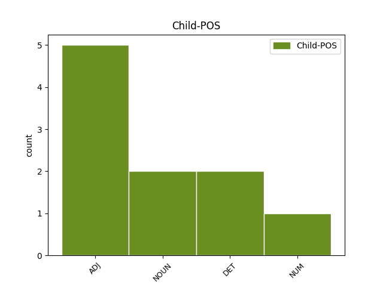

Distribution of features within this leaf



Agreement Rules sorted by frequency.
- When the dependent token is the conjunct(conj) of the head token, and the head token is ADP and the dependent token is ADJ.
1 Naplnil _ _ _ _ 0 _ _ _
2 dva _ _ _ _ 0 _ _ _
3 měchy _ _ _ _ 0 _ _ _
4 , _ _ _ _ 0 _ _ _
5 jeden _ _ _ _ 0 _ _ _
6 pro _ _ _ _ 0 _ _ _
7 sebe _ _ _ _ 0 _ _ _
8 na na ADP RR--4---------- AdpType=Prep|Case=Acc 0 _ _ _
9 cestu _ _ _ _ 0 _ _ _
10 a _ _ _ _ 0 _ _ _
11 druhý druhý ADJ CrIS4---------- Animacy=Inan|Case=Acc|Gender=Masc|Number=Sing|NumType=Ord 8 conj _ _
12 pro _ _ _ _ 0 _ _ _
13 vládce _ _ _ _ 0 _ _ _
14 , _ _ _ _ 0 _ _ _
15 a _ _ _ _ 0 _ _ _
16 vyrazil _ _ _ _ 0 _ _ _
17 na _ _ _ _ 0 _ _ _
18 cestu _ _ _ _ 0 _ _ _
19 . _ _ _ _ 0 _ _ _
1 Osud _ _ _ _ 0 _ _ _
2 ale _ _ _ _ 0 _ _ _
3 brzy _ _ _ _ 0 _ _ _
4 přichystal _ _ _ _ 0 _ _ _
5 mladému _ _ _ _ 0 _ _ _
6 štěstí _ _ _ _ 0 _ _ _
7 první _ _ _ _ 0 _ _ _
8 zkoušku _ _ _ _ 0 _ _ _
9 : _ _ _ _ 0 _ _ _
10 tři _ _ _ _ 0 _ _ _
11 měsíce _ _ _ _ 0 _ _ _
12 po _ _ _ _ 0 _ _ _
13 svatbě _ _ _ _ 0 _ _ _
14 se _ _ _ _ 0 _ _ _
15 musel _ _ _ _ 0 _ _ _
16 vydat _ _ _ _ 0 _ _ _
17 na _ _ _ _ 0 _ _ _
18 dlouhou _ _ _ _ 0 _ _ _
19 cestu _ _ _ _ 0 _ _ _
20 do _ _ _ _ 0 _ _ _
21 ciziny _ _ _ _ 0 _ _ _
22 a _ _ _ _ 0 _ _ _
23 cestoval _ _ _ _ 0 _ _ _
24 z _ _ _ _ 0 _ _ _
25 místa _ _ _ _ 0 _ _ _
26 na _ _ _ _ 0 _ _ _
27 místo _ _ _ _ 0 _ _ _
28 a _ _ _ _ 0 _ _ _
29 vrátil _ _ _ _ 0 _ _ _
30 se _ _ _ _ 0 _ _ _
31 teprve _ _ _ _ 0 _ _ _
32 po po ADP RR--6---------- AdpType=Prep|Case=Loc 0 _ _ _
33 roce _ _ _ _ 0 _ _ _
34 a _ _ _ _ 0 _ _ _
35 půl půl NUM Cl-S6---------- Case=Loc|Number=Sing|NumForm=Word|NumType=Card|NumValue=1,2,3 32 conj _ SpaceAfter=No
36 . _ _ _ _ 0 _ _ _
Disagree Examples:
1 Do do ADP RR--2---------- AdpType=Prep|Case=Gen 0 _ _ _
2 toho _ _ _ _ 0 _ _ _
3 křik křik NOUN NNIS1-----A---- Animacy=Inan|Case=Nom|Gender=Masc|Number=Sing|Polarity=Pos 1 conj _ SpaceAfter=No
4 , _ _ _ _ 0 _ _ _
5 jednak _ _ _ _ 0 _ _ _
6 rodiček _ _ _ _ 0 _ _ _
7 a _ _ _ _ 0 _ _ _
8 mladých _ _ _ _ 0 _ _ _
9 žen _ _ _ _ 0 _ _ _
10 , _ _ _ _ 0 _ _ _
11 jednak _ _ _ _ 0 _ _ _
12 dětí _ _ _ _ 0 _ _ _
13 , _ _ _ _ 0 _ _ _
14 bylo _ _ _ _ 0 _ _ _
15 to _ _ _ _ 0 _ _ _
16 úděsné _ _ _ _ 0 _ _ _
17 a _ _ _ _ 0 _ _ _
18 já _ _ _ _ 0 _ _ _
19 se _ _ _ _ 0 _ _ _
20 rozeběhla _ _ _ _ 0 _ _ _
21 do _ _ _ _ 0 _ _ _
22 pokoje _ _ _ _ 0 _ _ _
23 , _ _ _ _ 0 _ _ _
24 kde _ _ _ _ 0 _ _ _
25 ležel _ _ _ _ 0 _ _ _
26 můj _ _ _ _ 0 _ _ _
27 syn _ _ _ _ 0 _ _ _
28 . _ _ _ _ 0 _ _ _
1 Nezdál _ _ _ _ 0 _ _ _
2 se _ _ _ _ 0 _ _ _
3 mi _ _ _ _ 0 _ _ _
4 každou _ _ _ _ 0 _ _ _
5 noc _ _ _ _ 0 _ _ _
6 , _ _ _ _ 0 _ _ _
7 ale _ _ _ _ 0 _ _ _
8 často _ _ _ _ 0 _ _ _
9 , _ _ _ _ 0 _ _ _
10 a _ _ _ _ 0 _ _ _
11 pokaždé _ _ _ _ 0 _ _ _
12 jsem _ _ _ _ 0 _ _ _
13 se _ _ _ _ 0 _ _ _
14 z _ _ _ _ 0 _ _ _
15 něho _ _ _ _ 0 _ _ _
16 probudil _ _ _ _ 0 _ _ _
17 hrůzou _ _ _ _ 0 _ _ _
18 , _ _ _ _ 0 _ _ _
19 s s ADP RR--7---------- AdpType=Prep|Case=Ins 0 _ _ _
20 bušícím _ _ _ _ 0 _ _ _
21 srdcem _ _ _ _ 0 _ _ _
22 a _ _ _ _ 0 _ _ _
23 splavený splavený ADJ AAMS1----1A---- Animacy=Anim|Case=Nom|Degree=Pos|Gender=Masc|Number=Sing|Polarity=Pos 19 conj _ _
24 potem _ _ _ _ 0 _ _ _
25 . _ _ _ _ 0 _ _ _
1 Je _ _ _ _ 0 _ _ _
2 to _ _ _ _ 0 _ _ _
3 babice _ _ _ _ 0 _ _ _
4 s _ _ _ _ 0 _ _ _
5 drápy _ _ _ _ 0 _ _ _
6 místo _ _ _ _ 0 _ _ _
7 prstů _ _ _ _ 0 _ _ _
8 , _ _ _ _ 0 _ _ _
9 s s ADP RR--7---------- AdpType=Prep|Case=Ins 0 _ _ _
10 černými _ _ _ _ 0 _ _ _
11 rakovinnými _ _ _ _ 0 _ _ _
12 bradavicemi _ _ _ _ 0 _ _ _
13 ve _ _ _ _ 0 _ _ _
14 tváři _ _ _ _ 0 _ _ _
15 , _ _ _ _ 0 _ _ _
16 zachumlaná zachumlaný ADJ AAFS1----1A---- Case=Nom|Degree=Pos|Gender=Fem|Number=Sing|Polarity=Pos 9 conj _ _
17 do _ _ _ _ 0 _ _ _
18 hader _ _ _ _ 0 _ _ _
19 páchnoucích _ _ _ _ 0 _ _ _
20 močí _ _ _ _ 0 _ _ _
21 . _ _ _ _ 0 _ _ _
1 Kůra _ _ _ _ 0 _ _ _
2 : _ _ _ _ 0 _ _ _
3 zelenohnědá _ _ _ _ 0 _ _ _
4 , _ _ _ _ 0 _ _ _
5 na na ADP RR--4---------- AdpType=Prep|Case=Acc 0 _ _ _
6 podzim _ _ _ _ 0 _ _ _
7 červená červený ADJ AAFS1----1A---- Case=Nom|Degree=Pos|Gender=Fem|Number=Sing|Polarity=Pos 5 conj _ _
1 Nohy _ _ _ _ 0 _ _ _
2 mám _ _ _ _ 0 _ _ _
3 štíhlé _ _ _ _ 0 _ _ _
4 , _ _ _ _ 0 _ _ _
5 bez bez ADP RR--2---------- AdpType=Prep|Case=Gen 0 _ _ _
6 křečových _ _ _ _ 0 _ _ _
7 žil _ _ _ _ 0 _ _ _
8 , _ _ _ _ 0 _ _ _
9 pečlivě _ _ _ _ 0 _ _ _
10 oholené oholený ADJ AAFP4----1A---- Case=Acc|Degree=Pos|Gender=Fem|Number=Plur|Polarity=Pos 5 conj _ SpaceAfter=No
11 , _ _ _ _ 0 _ _ _
12 tak _ _ _ _ 0 _ _ _
13 proč _ _ _ _ 0 _ _ _
14 je _ _ _ _ 0 _ _ _
15 neukázat _ _ _ _ 0 _ _ _
16 ? _ _ _ _ 0 _ _ _